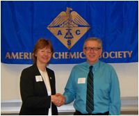
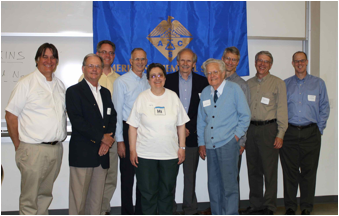
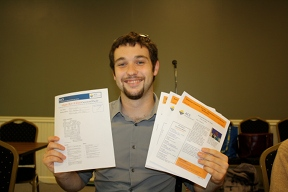

Elements of Dance Update
The Local Sections Activity Committee
(LSAC) gave KACS a glowing review. Read
more here.
Pictures by
DB Photography
|
|
Thanks to our donors!

|
KACS became a ChemLuminary Award finalist
for the "Chemistry and Culture: Elements of
Dance" event (11/9/12) at the Kalamazoo
Institute of Arts
in the category of "Most Innovative Activity or
Program". Out of 186 Local Sections nationwide, we are
thrilled to have been recognized in this category and thank
all the donors and volunteers who
helped us make this event a success (179 attendees).
|
Mission Statement:
We are a dynamic and visionary organization committed to
improving people’s lives in our community through the
transforming power of chemistry. We strive to advance
the broader chemistry enterprise and its practitioners for the
benefit of Kalamazoo, Allegan and Van Buren counties.
|
| Stay connected with your colleagues in the Kalamazoo ACS Local Section by liking our Facebook page. |
|
|
{% assign newsletter = site.categories.newsletter.first %}
Current KACS Newsletter:
|
{{ newsletter.date | date: "%B %Y" }}
Newsletter [pdf]
In it, you will learn about:
{{ newsletter.excerpt }}
This and much more can be found in your September
Newsletter. Our Newsletter Archive can
be found here.
|
Best wishes from your
KACS Chair

Elke Schoffers, Ph.D.
|
|
Upcoming KACS Events:
Kalamazoo Sci-Mix Poster Session:
Sustainable Science - Recycle a Poster (Sponsored by Zoetis)
Tuesday, October 8, 2013, 5-9 PM at Bell's Eccentric Cafe, 355 E. Kalamazoo Ave, downtown Kalamazoo, 269-382-5712. More details here.
More details here
|
National Chemistry Week: Chemistry Day at the Museum
Saturday 12 October 2013, 12:00 to 16:00 at the Kalamazoo Valley Museum. More details TBA.
|
|
Recent KACS Events:
WMU Ice Cream Social
The WMU Chemistry Graduate Student
Association and Chem Club are hosting an
ice cream social on Wednesday September 4th at
3:00pm in the WMU chemistry building.
More details here
|
Science Cafe: Horticultural Chemistry with Dr. Gus Guzinski
Tuesday, September 17th at Wedel’s:
5020 Texas Drive
Kalamazoo
269-345-1195
Open to the public. More details
here
|
|
Special Announcements:
October 10, 2013 | 7 pm
Miller Auditorium, WMU
Free Admission -
Registration Required
“Notes from the Front Lines of the Climate Fight”
Bill McKibben is not a person you’d expect to find
handcuffed in the city jail in Washington, D.C. But that’s
where he spent three days in the summer of 2011, after
leading the largest civil disobedience in thirty years to
protest the Keystone XL Pipeline. A few months later the
protesters would see their efforts rewarded when President
Obama agreed to put the project on hold. His new book is Oil
and Honey: The Education of an Unlikely Activist.
McKibben realizes that this small and temporary victory on
the Pipeline is at best a stepping-stone. With the Arctic
melting, the Midwest in drought, and Sandy scouring the
Atlantic, the need for much deeper solutions is
obvious. Some of those would come at the local level, and
McKibben recounts a year he spends in the company of a
beekeeper raising his hives as part of the growing trend
toward local food. Other solutions would come from a much
larger fight against the fossil-fuel industry as a
whole. Oil and Honey is McKibben’s account of these two
necessary and mutually reinforcing sides of the global
climate fight—from the absolute center of the maelstrom and
from the growing hive of small-scale local answers to the
climate crisis.
|
2012 KACS Awards
Outstanding college and high school students, our Section’s Competitive Exam winners, a high school teacher, one ACS 50-year member and 10 past-chairs still living in the Kalamazoo area, along with parents, siblings, teachers and a few Local Section members — 91 enthusiastic guests in all — visited WMU’s campus on May 21 to join the KACS Awards Ceremony. CONGRATULATIONS to everyone!

Elke Schoffers (KACS Chair) congratulates Al Nieboer (Outstanding High School Chemistry Teacher, Kalamazoo Christian High School).

KACS Past-Chairs (left to right): Donald Schreiber, John Greenfield, Benjamin Maxey, Robert Kelly, Lydia Hines, Wade Adams, Robert Nagler, Doug Williams, John Stodola, James Kiddle
|
Allegan Meet 'N Greet

Did you know which element circulates in rumors of having been despised by Mahatma Gandhi? Mark Wolf did! He won the puzzle prize at the KACS Meet 'N Greet in Allegan on June 22, 2012. Congratulations! |
Excerpt from “A Letter from Madeleine Jacobs”
ACS Executive Director and Chief Executive Officer |
| Where do our members work? |


{kind=link}